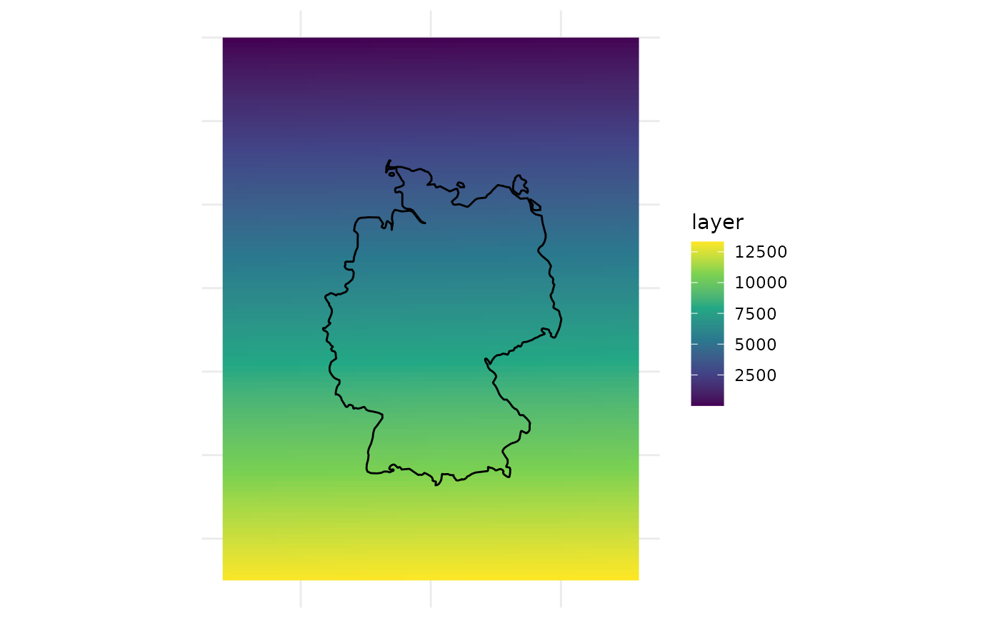
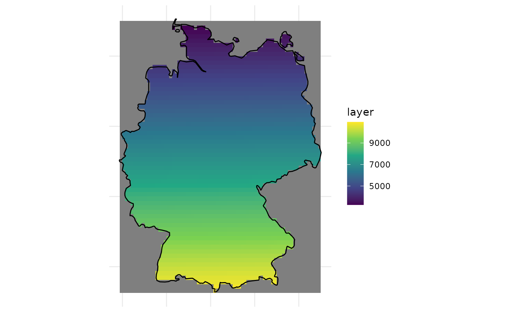

Clip a raster layer by a spatial polygon
Source:R/spat_clip_raster_by_polygon.R
clip_raster_by_polygon.RdThis function clips a raster layer using a specified spatial polygon, effectively masking the raster outside the polygon area. The resulting clipped raster retains the original raster's properties and values within the polygon's bounds.
Value
A RasterLayer object representing the portion of the input raster that falls within the specified polygon. The returned raster contains the same data as the original within the polygon's bounds but is masked (set to NA) outside of it.
Examples
load_packages(raster, sp, rworldmap, ggplot2)
# example Polygon
SPDF <- rworldmap::getMap(resolution = "low") %>%
subset(NAME == "Germany")
# example raster
r <- raster::raster(
xmn = 2, xmx = 18, ymn = 45, ymx = 58, resolution = 0.125)
r[] <- seq_len(length(r))
r
#> class : RasterLayer
#> dimensions : 104, 128, 13312 (nrow, ncol, ncell)
#> resolution : 0.125, 0.125 (x, y)
#> extent : 2, 18, 45, 58 (xmin, xmax, ymin, ymax)
#> crs : +proj=longlat +datum=WGS84 +no_defs
#> source : memory
#> names : layer
#> values : 1, 13312 (min, max)
#>
# plotting example data
ggplot2::ggplot() +
ggplot2::geom_raster(
data = as.data.frame(r, xy = TRUE),
ggplot2::aes(x = x, y = y, fill = layer)) +
ggplot2::geom_sf(
data = sf::st_as_sf(SPDF), fill = NA, color = "black", linewidth = 0.5) +
ggplot2::scale_fill_viridis_c() +
ggplot2::theme_minimal() +
ggplot2::labs(x = NULL, y = NULL) +
ggplot2::theme(axis.text = ggplot2::element_blank())

# ----------------------------------
SPDF_DE <- clip_raster_by_polygon(r, SPDF)
ggplot2::ggplot() +
ggplot2::geom_tile(
data = as.data.frame(SPDF_DE, xy = TRUE),
ggplot2::aes(x = x, y = y, fill = layer)) +
ggplot2::geom_sf(
data = sf::st_as_sf(SPDF), fill = NA, color = "black", linewidth = 0.5) +
ggplot2::scale_fill_viridis_c() +
ggplot2::theme_minimal() +
ggplot2::labs(x = NULL, y = NULL) +
ggplot2::theme(axis.text = ggplot2::element_blank())
